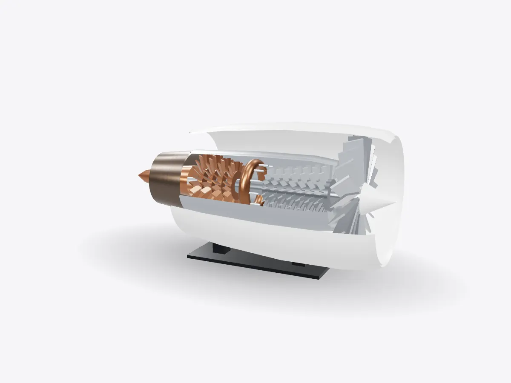

01 / 05
Overview
7 parts, one idea.
Explore a turbofan jet engine in 3D: fan, compressor, combustor, turbine and nozzle, with spinning stages. Slice it, explode it and learn how thrust is made.
Drag to orbit, pinch or scroll to zoom, tap any part.
How it works · Machines
Suck, squeeze, bang, blow. A turbofan does all four continuously, with every stage spinning on a shared idea: push air backwards to go forwards.

Scores are saved on this device only.
01 / 05
Overview
Explore a turbofan jet engine in 3D: fan, compressor, combustor, turbine and nozzle, with spinning stages. Slice it, explode it and learn how thrust is made.
Drag to orbit, pinch or scroll to zoom, tap any part.
02 / 05
Explode
Keep scrolling and every part slides away from the centre, so you can see how they fit together.
03 / 05
Slice
A section plane sweeps through the model as you scroll. Pick an axis and set the depth yourself.
04 / 05
Parts
Pick a part or tap a glowing dot. It lights up and everything else fades back.
05 / 05
Facts
On airliner turbofans most thrust comes from fan air that never enters the core.
The Heinkel He 178, powered by Hans von Ohain's engine, made the first jet-powered flight.
Frank Whittle filed his patent for a turbojet engine in the UK.
Explained
A jet engine makes thrust by speeding up a stream of air and throwing it out of the back. Engineers sum up the process as suck, squeeze, bang, blow. Air is drawn in at the front, compressed, heated by burning fuel, and then expanded through a turbine and out of a nozzle. Unlike a car engine, which repeats the same steps in a cylinder, a jet engine does all four at once in different places, so the power flows continuously.
The engine in this model is a turbofan, the type used on almost every modern airliner. Its defining feature is the large fan at the front. Only a small share of the air the fan moves goes into the core of the engine; the rest is pushed around the outside through the bypass duct. Moving a large mass of air fairly slowly is more efficient and quieter than moving a small mass very fast, which is why the bypass air produces most of the thrust on today's airliners.
The core starts with the compressor, a stack of rotating blade rows separated by fixed vanes. Each stage raises the pressure a little, and together they squeeze the air to many times atmospheric pressure. The compressed air then enters the combustor, an annular chamber where fuel is sprayed in and burned continuously. The flame never goes out in normal running, and the gas leaving the combustor is extremely hot.
That hot, high-pressure gas rushes through the turbine. Turbine blades work like windmill sails, taking energy from the flow to turn the shafts that drive the compressor and the fan. The blades survive temperatures above their alloy's melting point only because cool air is fed through tiny passages inside them and because they are protected by ceramic coatings. Whatever energy the turbine doesn't take is turned into a fast jet by the exhaust nozzle.
The fan, the compressor and the turbine don't all spin at the same speed. Large turbofans have two or three concentric shafts, each joining one part of the turbine to the part of the compressor or fan it drives. The fan is big, so its tips would go supersonic if it spun as fast as the small high-pressure stages, and separate shafts let each part run at its best speed. In the model, the inner high-pressure stages spin faster than the fan.
D3DDD
D3DDD makes them: product cutaways, exploded views, architectural renders and technical drawings.